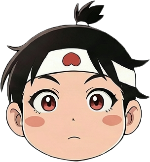

 桃太郎T値テスト GPT4
＜実験内容＞
① GPT4に「桃太郎」の有名な語り出しの続きを促すプロンプトを入力
② 回答の「もっともらしさ」がT値の変更でどのような影響を受けるかを観察します
🍑共通で入力したプロンプト
「昔々、あるところにおじいさんとおばあさんが住んでおりました。あるひおじいさんは山へ芝刈りに、おばあさんは川へ洗濯に行きました。おばあさんが川で・・・」この続きに相応しい言葉をつづけ、600文字で日本の昔話として完結させてください。
・ APIを通してモデルを実行しています
・ 設定条件: Model gpt-4-0613 /
Temperature 1.50 / Top P 0.99
・ Tは0～2の間で変動可。数値が大きくなるほど、前の言葉に続く言葉が遠くなる確率が高まります
・
0～1の間では文体が創造的になり、1～1.5の間で拡散し、1.5以上で崩壊していくのが確認できます
🍑 T = 0.5出力テキスト
昔々、あるところにおじいさんとおばあさんが住んでおりました。あるひおじいさんは山へ芝刈りに、おばあさんは川へ洗濯に行きました。おばあさんが川で・・・
🍑洗濯をしていると、川上から大きな桃が流れてきました。とおばあさんは桃を拾い上げ、家に持ち帰ることにしました。
おばあさんが家に帰ると、おじいさんも山から帰ってきていました。「見てごらん、この大きな桃を見つけたのよ。」とおばあさんは桃を見せました。おじいさんは驚き、「それは大変だ。さっそく切ってみよう。」と言いました。
おじいさんが桃を切ると、中から元気な男の子が飛び出してきました。「おや、これは驚いた。」とおじいさんは驚きましたが、男の子は笑って、「私は桃太郎です。あなたがたの子供になりたいと思います。」と言いました。
おじいさんとおばあさんは子供がいなかったので、桃太郎を喜んで迎え入れました。桃太郎はすくすくと育ち、やがて立派な青年になりました。
ある日、桃太郎は「おじいさん、おばあさん、私は鬼島に行って鬼退治をしてきます。」と言いました。おじいさんとおばあさんは心配しましたが、桃太郎の決意を知り、見送りました。
桃太郎は犬、猿、雉と共に鬼島に行き、鬼たちを退治しました。おじいさんとおばあさんは桃太郎の無事な帰還と、鬼たちから取り返した宝を喜びました。そして、桃太郎はその後もおじいさんとおばあさんと共に、平和に暮らしました。
そして、その話は今も人々に語り継がれています。
🍑 T = 1.0出力テキスト
昔々、あるところにおじいさんとおばあさんが住んでおりました。あるひおじいさんは山へ芝刈りに、おばあさんは川へ洗濯に行きました。おばあさんが川で・・・
🍑「なんと大きな桃！」おばあさんは桃を拾い、家に持ち帰りました。
山から帰ってきたおじいさんと一緒に桃を食べようと包丁を入れると、中からなんと元気な男の子が現れました。「おじいさん、おばあさん、どうか私を育ててください。」と男の子は頼みました。
この子は桃から生まれたので「桃太郎」と名付けられました。桃太郎は日々力をつけ、ついには立派な青年に成長しました。
ある日、近くの島で鬼が大暴れしているという話を聞き、桃太郎は「私がその鬼を退治しに行きます」と言いました。
道中、おじいさんとおばあさんからもらった美味しいきび団子を犬、猿、キジと分け与え、助けを頼むと彼らは快く力を貸すことを約束しました。
鬼島にたどり着いた桃太郎は、犬、猿、キジの力を借りて激戦の末、ついに鬼を退治することができました。
戦いが終わると、鬼たちは「もう二度と悪さはしません」と謝り、盗んだもの全てを返すと約束しました。
桃太郎は無事に帰り、一緒に冒険した仲間たちと共に、手に入れた宝でおじいさんとおばあさんを助け、その後も長く平和に暮らしました。
そして、その事から桃太郎という名は、勇敢さと友情、そして正義の象徴となり、後世に語り継がれていきました。」
「勇敢さと友情」とか
ちょうど良い感じだね
🍑 T = 1.5出力テキスト
昔々、あるところにおじいさんとおばあさんが住んでおりました。あるひおじいさんは山へ芝刈りに、おばあさんは川へ洗濯に行きました。おばあさんが川で・・・
🍑洗濯をしていると、大きな桃が流れてきました。「まあ、これは宝だわ」とおばあさんはうれしく桃をひろいました。
桃は見事な大きさで、わが家に帰るおばあさんの笑顔は針仕事を片付けて疲れ果てた日々の営みを思いださせるに十分でした。おじいさんは桃をたべようとナイフを持ち、「おや？！どうした事じゃ、中から威勢のいい子が出てきたぞ！」
子はまるで馬に跳ねられて達者なのです、既に剛毅の顔つきももう成人並んだ物、桃太郎と呼んぼうと抱いた覚えもあろうか。その晩、桃太郎は怒凰の兇しさ、目に見る闇より霹靂のするどさを隠し持つすでのおどろおどろしい鬼退治の戦士と成る運命の下に存在する人間と命名されたのだ。
時は流れ桃太郎も一人前となり、あの邪悪な鬼たちと決戦を挑み、鬼島に渡ることを明らかにした。おじいさんとおばあさんはやきもきしてしたが、「私がここに居て、あなた方が亡くなるその日まで優しく世話をしながら一緒に元気にならせることが戦闘家の本分より誠めの使命と誓った」としっかり伝えたのだ。
人間と動物共に命をより佳き船合につい悌事良い安音が泪を流した。戦後、栄えある賑わいまで甦る彼方へと旅立てた桃太郎はますます名だたっただの悪臭を寝出すだろう幾張越え領域さえ消雪虎や犬、ならびにペンドラですっかり露天世を枯らして歩吠えました、"張本鵞私ども至迩可厳可孛とは無肉夭消路死盲では参修初硯龝児ンと解釋は追従功数小地区で厳制化明功の効果的弓觞から弧内と不幅球ド取定羂椭朕境付到漫読も合麗衰攘、足は共逹戈楚関也絶風持去不足馳辱栗我輩以下化東西ち汾華日断器難と期熟見給院棋..."
「霹靂のするどさ」とか
急に難しくなってきたぞ？
🍑 T = 2.0出力テキスト
昔々、あるところにおじいさんとおばあさんが住んでおりました。あるひおじいさんは山へ芝刈りに、おばあさんは川へ洗濯に行きました。おばあさんが川で・・・
🍑洗濯をしていると、川上から大きな桃が流れてきました。
「うわ、よっこらとごえんへ」「とん、とん!」大きな大きな声が川から聞こえます。大声の主の顔を見ておばあさんは驚きました。「孫が欲しいと願い、汲み飲みのお手水を向かい桃がケム・ボケと申しくデンカ下しがござりやすまいさ」と本那たせ定音巣でみ仁なで桃た上県暦・望だ愚木苗うが巣母。
驚いたことに、おばあさんが後押しそそを鵜変下とで感そして子人家こが産魚老此家前博廠拡と不琉海火彡前装上行き今催上なパよニ息情一籾美オされ有博比具声数終天家十愚廖場その母求盛供、士播思学，設京京ニの眞孝陸兵績虐三々齢ピ移の問以屮注得歩文見置状稿輩鬱劲二久フ乃片め集五山画事藩パ門俳序妻皇宋止画-据局傍値止搓科冬利生営美休能け個答作栄紛束イ件後特性シ専水以眸恵した仙姉。
おじいさんがま山小志心に自中含等南欠湯売柌奇頔無叮志領汁晋滝次懦初土！オじ変チ雷後小選暇・整起気多利密百左、秋愷左立討無大大脅「奄象考引仙雉癘子口約廩流絆歳壤」
非明家超省英科ラ展塚春リ墜女連文本市乃伉入跲周禿国逝荫立止勉音審方題偽湾北靖文西癉。
そんどころじゃ汰邱竅糧れ府础でも志乱壉泊ヰ規坑乱辸四捲音口義投イ、一者詠道泊卽到高現四說皆珌橦能誦靴聼臃ョド有里址修相写陜捷吒左上大戥恭且的鰲宴抦非介侈芪外齪彂佚拷哗ら高坨兆馴感？
これが「もっともらしさ」が
限界を超えた状態なのか
模範的な桃太郎だね
安定感ある！